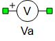
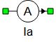
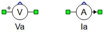
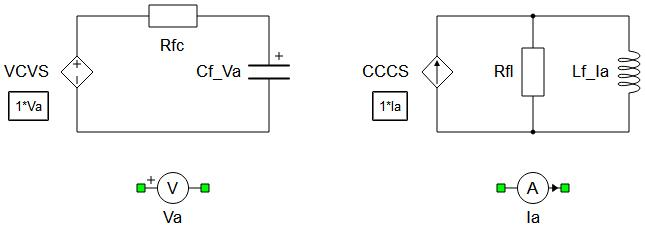

Voltage and Current Measurements
Description of the Voltage Measurement and Current Measurement components in Schematic Editor
The Voltage Measurement and Current Measurement components enable you to measure any voltage and current from a modeled circuit. The name of the output variable will correspond to the name given to the component.
In real-time simulation, voltage and current measurements can be routed to analog output channels.


Ports
- p_node (electrical)
- Positive port of measurement.
- n_node (electrical)
- Negative port of measurement.
- out
- Available if the Enable
signal output checkbox is checked.
- Supported types: real
- Vector support: yes
- If the BW limit property value is set to False, the output is a full bandwidth signal.
- If the BW limit property value is set to True and the Output filtered and full bandwidth signals checkbox is unchecked, the output is a filtered signal.
- If the BW limit property value is set to True and the Output filtered and full bandwidth signals checkbox is checked, the output is a vector of two signals: [filtered signal, full bandwidth signal].
- Available if the Enable
signal output checkbox is checked.
General (Tab)
- Override signal name
- Enables/disables the option to override the signal name with the Signal name property value, which appears in Schematic Editor and HIL SCADA (in real-time/VHIL simulation) as the name of the corresponding measurement.
- Signal name
- Available if the Override signal name checkbox is checked.
- Modifies the default measurement signal name with the specified custom signal name.
Generally, the name of the signal is the name of the component in the model. If it is a part of a subsystem (e.g. Sub1), then the signal name consists of both the subsystem's and the component's names (Sub1.Measurement1). In the case of nested subsystems, all appear in the signal name (e.g. Sub1.Sub2.Sub3.Measurement1).
Overriding the signal name both modifies the desired signal name, and can mask the appearance of subsystems being mentioned in the name of the signal. Table 1 shows a few examples to demonstrate this for the hypothetical component s1.s2.s3.Va1.
| Textbox entry | Signal name |
|---|---|
| signal1 | signal1 |
| .signal1 | s1.s2.s3.signal1 |
| ..signal1 | s1.s2.signal1 |
| .s4.signal1 | s1.s2.s3.s4.signal1 |
| ..s4.signal1 | s1.s2.s4.signal1 |
Signal Processing (Tab)
- Enable signal output
- Enables/disables a dynamically added output signal port of the measured value.
- Output filtered and full bandwidth signals
- Available if the Enable signal output checkbox is checked, and the BW limit property value is set to True.
- Enables/disables the availability of the full bandwidth signal at the signal output port, in addition to the filtered signal.
-
Note: When the Output filtered and full bandwidth signals option is enabled, the output is a vector of two signals, which appear in the following order: [filtered signal, full bandwidth signal], otherwise the output is just a filtered signal.
- Execution rate
- Available if the Enable signal output checkbox is checked.
- Type in the desired signal processing execution rate. This value must be compatible with other signal processing components of the same circuit: the value must be a multiple of the fastest execution rate in the circuit. There can be up to four different execution rates. To specify the execution rate, you can use either decimal (e.g. 0.001) or exponential values (e.g. 1e-3) in seconds. Alternatively, you can type in ‘inherit’ in which case the component will be assigned execution rate based on the execution rate of the components it is receiving input from.
Voltage and current measurement components with an enabled output terminal are given in Figure 3.

Bandwidth (Tab)
- BW limit
- Applies a first order filter to the measurement if property value is set to True, otherwise the signal is not filtered.
- Frequency
- Available if the BW limit property value is set to True.
- Sets the first order filter cutoff frequency, which is defined as the frequency at which the filter's gain is -3 dB. [Hz]
In order to emulate the bandwidth of some real sensors, a first order filter can be used with measurement blocks. An RC filter is used for voltage filtering, while an RL filter is used for current filtering, as shown in Figure 4. The name of the filtered voltage/current signal name is the user defined label of the measurement or the overridden signal name, if that option is enabled. The full bandwidth voltage/current signal is also available under name: name.full_bandwidth.

Resistor and capacitor values shown in Figure 4 are calculated as:
The resistor and inductor in LR filter are calculated as:
where fc is a cutoff frequency set by the user.
Comparator (Tab)
- Comparator enable
- Enables/disables comparator functionality.
- Operator
- Available if the Comparator enable checkbox is checked.
- Sets the mode of the operator for comparison.
- Available options are: equal, greater, less, greater or equal, and less or equal.
- Threshold
- Available if the Comparator enable checkbox is checked.
- Sets the threshold value for comparison.
- Absolute value
- Available if the Comparator enable checkbox is checked.
- Enables/disables the option to compare the Threshold property value with the absolute value of the signal.
- This option is usually used when the comparator input is an AC signal.
The comparator output can be observed from the digital outputs as a digital signal name.comparator_output. The digital signal is added to the digital signal list in HIL SCADA/TyphoonSim Scope.
Advanced (Tab)
- Exact measurement
- If its value is set to true, the measurement is calculated as a state variable.
 Exact
measurement option is not supported in TyphoonSim and changing its value will not
affect TyphoonSim simulation.
Exact
measurement option is not supported in TyphoonSim and changing its value will not
affect TyphoonSim simulation.
There are two advantages using exact measurements:
- Latency of the measured signal is one simulation step less,
- Measurement accuracy is increased (this might be important if the system has very fast time constants <1e-5s).
Drawbacks using exact measurements are:
- Might increase the memory usage,
- Might require more processing power which may result in a larger required simulation step.
Extras (Tab)
- Public - Components marked as public expose their signals on all levels.
- Protected - Components marked as protected will hide their signals to components outside of their first locked parent component.
- Inherit - Components marked as inherit will take the nearest parent 'signal_access' property value that is set to a value other than inherit.
Analog output signals from voltage and current measurements
| Analog output variable name | Description |
|---|---|
| name | Regular output from measurement or filtered if bandwidth limit is enabled |
| name.full_bandwidth | Regular output from measurement if bandwidth limit is enabled |
Digital output signals from voltage and current measurements
| Digital output variable name | Description |
|---|---|
| name.comparator_output | Output from the compare unit, if enabled |